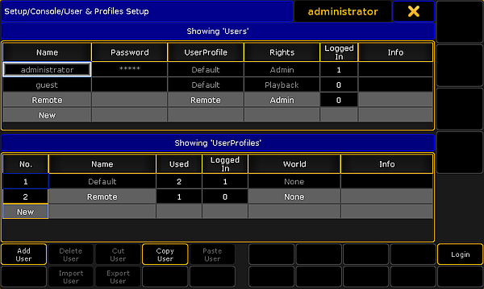

The user system is divided into two different parts - The User and the User Profile.
A User have a User Profile assigned. Many Users can have the same User Profile assigned. Each User have their own programmer and can have different selected elements (Executors, Worlds, Filters, and so on). But if they use the same User Profile, then the Users share the Views and View Button assignment and a lot of other settings.
User & Profiles Setup
The User & Profiles Setup is where you control the Users and the User Profiles. It can be opened by pressing Setup and then User & Profiles Setup in the Console section.
Or by typing Menu UserProfiles in the command line.
This is what it look like:

User & Profiles Setup
This menu offers a lot of information and some possibilities. But the main purpose of this menu is to create Users and User Profiles.
The main part of this menu is separated into two sections. The top section is about the User and the bottom part is about the User Profile.
The general background color rule applies here. A cell with a black background cannot be edited. Gray background allows you to edit the cell content.
There are two Users and one User Profile that is in all shows and cannot be delete or changed. It is the Administrator and Guest users.
When a User is logged in, then some settings are locked and cannot be changed and if changes are made to a user that is logged in, then that user might need to login again before the changes are applied.
In the title bar you can see what user is currently logged in on the station you are standing or sitting in front (in the image above is "administrator").
Button explanation
There is a set of buttons at the bottom of the menu. They change depending on what is selected. This is a short description of them:
Add [Profile/User] - This will create a new user or user profile (depending where the focus last was).
Delete [Profile/User] - This will delete the selected user or user profile (the one with the white frame).
Cut [Profile/User] - This will move the selected user or user profile in the clipboard - ready to be pasted somewhere.
Copy [Profile/User] - This will make a copy of the selected user or user profile into the clipboard - ready to be pasted somewhere.
Paste [Profile/User] - This will paste the user or user profile from the clipboard to the selected location.
Import [Profile/User] - This allows you to import a previously exported user profile.
Export [Profile/User] - This will export the selected user profile. A pop-up might appear asking where it should be exported: the internal memory or to any detected USB sticks.
Login - Pressing this button will login the station with the user selected in the User list.
Column explanation
Each of the two sections have some columns.
This is a short explanation of the columns in the UserProfile section:
No. - This is the profile number. It cannot be edited.
Name - This is the name of the profile.
Used - This is for information. Here you can see how many users have this profile assigned (read below).
Logged In - Here you can see how many stations are currently logged in with a user with this profile.
World - A world can be assigned to a User Profile. This will only allow access to the fixtures and attributes in this specific world. Read more below.
Info - Here you can type some information text.
This is a short explanation of the columns in the Users section:
Name - This is the name of the user - this is the name used when logging in.
Password - Passwords can be added to a User. This password needs to be type when logging in. Leave this empty if you do not want a password.
UserProfile - All Users need to have one of the UserProfiles assigned. Editing this cell will open the Select User Profile pop-up.
Rights - Here you can select the level of rights the user should have. Editing this cell will open the Select Rights pop-up. Please read the section below to learn more.
Logged In - Here you can see how many stations are currently logged in with this user.
Info - Here you can type some information text to the user.
User rights
There are seven different levels of user rights.
When editing the Rights cell in a User, then you will get a small pop-up that lists the following users:
Admin - This is full rights to change everything in the console, system and show.
Setup - This will limit access to some of the elements in the console. The user cannot access the User & Profile Setup! There are other console settings that can be accessed.
Program - In this level the user cannot do major changes to the Fixture Schedule. It only gives access to the "Patch Only". Most programming operations can be done.
Presets - This level allows to update existing presets. But the user cannot edit the cue content.
Playback - This level allows to playback and run a programmed show. But the user cannot store anything.
None - With this user right it is not allowed to use a programmer. The user is allowed to run executors and change views.
You can only change the rights when the user is not logged in.
Assigning worlds to User Profiles
Assigning a world to a User Profile will limit the Users assigned to this User Profile to only use the assigned World. It is not possible for the user to change world.
The default option is None. This means that the user is not limited.
Editing a cell in the World column will open up a small Select World pop-up. This will list the None option and all the created worlds in the show file.
Selecting the "Full 1" world will give the user access to every fixture and attribute, but the user is locked from changing world.
Worlds can be assigned using the command line.
To assign world number 4 to user profile number 3 use the following command:
[Channel]> Assign World 4 UserProfile 3
Create a new User Profile and a User
To create a new user with a new user profile you will need to do the following (you need to be logged in as a user with Admin rights):
Press the Setup key.
Tap the User & Profiles Setup.
Tap the cell with "New" in the lowest "UserProfiles" section - you might need to scroll down.
Tap the Add Profiles button.
Change the Name of the user profile to something that makes sense.
Tap the cell with "New" in the top "Users" section - you might need to scroll down.
Tap the Add User button.
Change the Name of the user to something that makes sense.
Add a password if you want one.
Select the User Profile you just created.
Change the user Rights if you need to.
Tap the Login button if you want to login immediately as this new user.